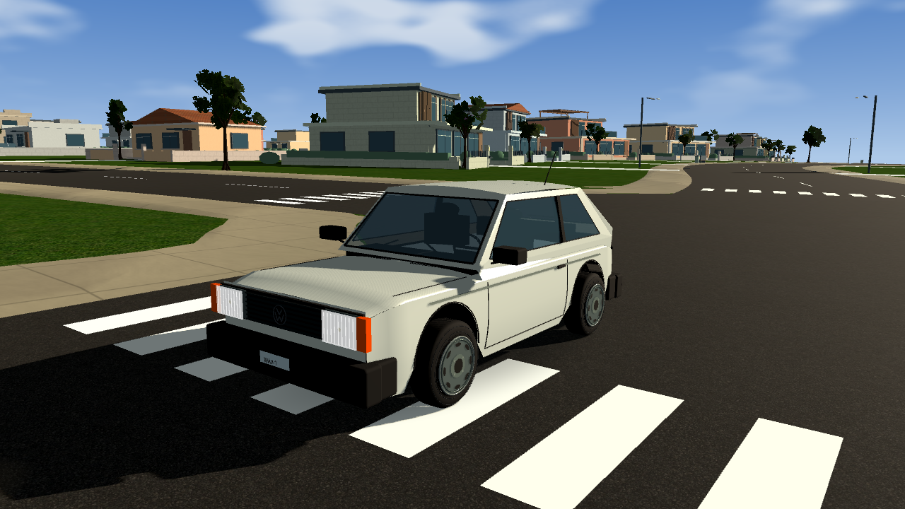
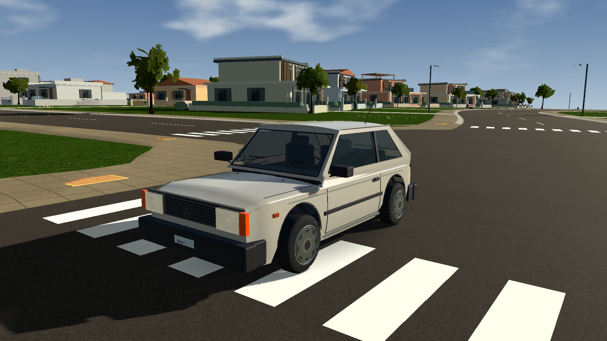
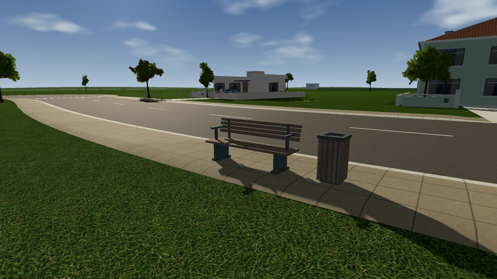
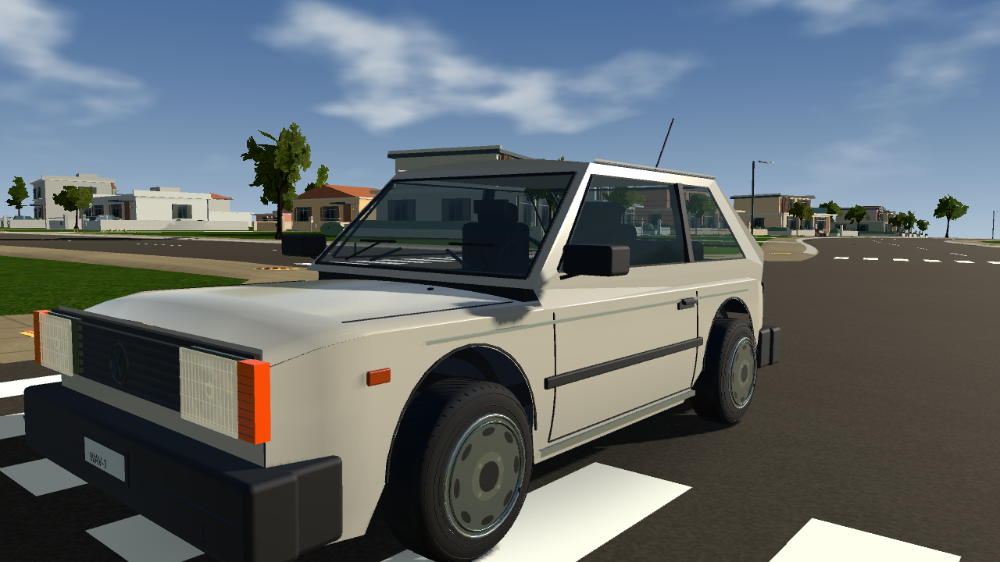
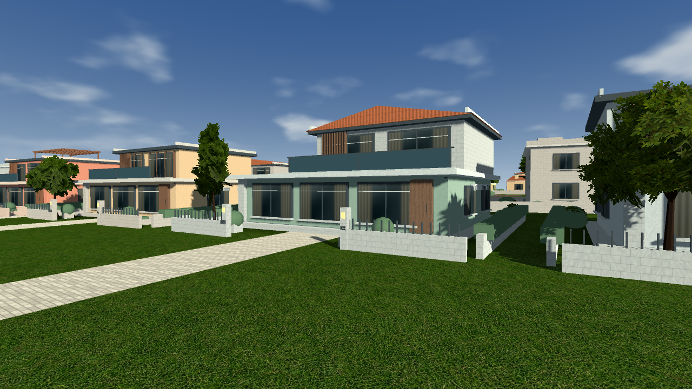

WAVE / 11 DE OUTUBRO DE 2026
O mesmo lugar.
Mais acabamento.
Gol 1000, fachadas, pavimentos e espaços de pedestres. A cidade continua com 200 quarteirões: esta revisão trabalha o que aparece de perto, antes de ampliar o mundo.
Imagens do jogo em Equilibrado, 1280 × 720, na Radeon R7 M260. Enquadramentos e horários correspondentes nas comparações. Arraste a divisão para conferir o detalhe.


AntesDepois

Banco de escala adulta, apoios, braços e lixeira com abertura visível.

Óticas, grade, acabamento dos plásticos, borrachas e roda de aço.

Mais frentes residenciais no terreno existente, com entradas e variação doméstica.